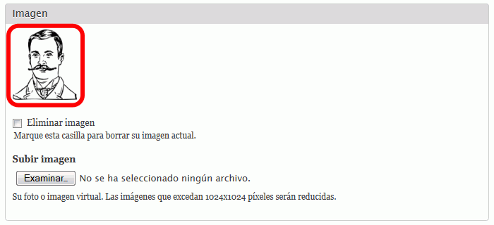
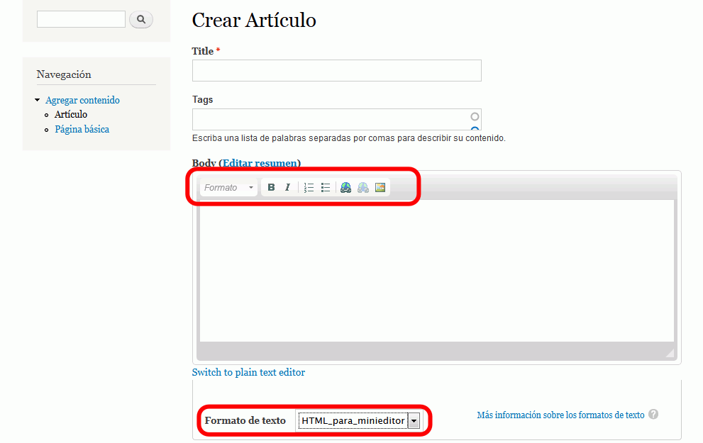
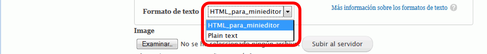
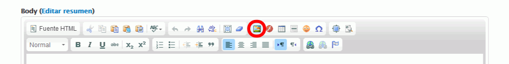
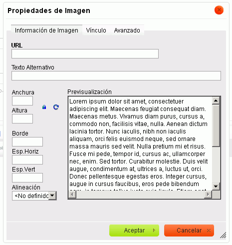
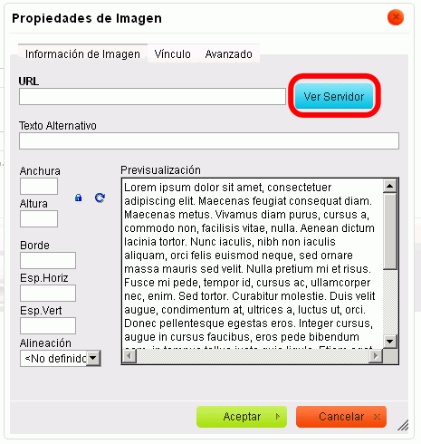

He empezado a actualizar esta lección para Drupal 8, pero no he terminado de hacerlo.
He empezado a actualizar esta lección para Drupal 8, pero no he terminado de hacerlo.
En esta lección se proponen ejercicios para conocer y utilizar Drupal. Se pueden consultar las soluciones de estos ejercicios de Drupal, aunque se recomienda intentar realizarlos primero sin recurrir a estas soluciones.
El objetivo de este ejercicio es conocer los dos tipos de contenidos básicos de Drupal: artículos y páginas básicas. Para ello, se propone al alumno:
Drupal permite crear usuarios y concederles diferentes posibilidades (permisos) de edición en el portal. Para facilitar la organización de los permisos otorgados a los diferentes usuarios, Drupal permite crear categorías de usuarios (denominadas Roles).
 )
)

 En Drupal 7, CKEditor se instalaba mediante un módulo. En Drupal 8, CKEditor está incluido en Drupal. Supongo que se podrá configurar de forma similar.
En Drupal 7, CKEditor se instalaba mediante un módulo. En Drupal 8, CKEditor está incluido en Drupal. Supongo que se podrá configurar de forma similar.
En este ejercicio se ajustará el editor CKEditor al rol minieditor, para que al crear contenido el usuario minieditor_1 vea la barra de herramientas básica de CKEditor:

En Drupal 7, los perfiles de CKEditor van asociados a formatos de entrada. Por ello, para que un usuario vea un menú de CKEditor distinto del del administrador, siga los pasos siguientes:

En este ejercicio se instalará un módulo para subir archivos, concretamente, el módulo IMCE.
Si la versión 1.9 del módulo IMCE para Drupal 7 ya no está disponible en la web del programa, puede descargarla desde la página de Descarga de aplicaciones.

 
 Por completar con capturas y decir qué versión hay que utilizar.
Por completar con capturas y decir qué versión hay que utilizar.
Configure IMCE para que dos usuarios minieditor_1 y minieditor_2 (de rol minieditor) también pueda subir archivos e imágenes con IMCE, creando en IMCE un perfil minieditor. Hágalo de dos maneras distintas:
 En Drupal 7, el módulo IMCE Mkdir era un complemento del módulo IMCE para permitir crear carpetas a los usuarios. Parece ser que este módulo no es necesario en Drupal 8, pero tendría que comprobarlo.
En Drupal 7, el módulo IMCE Mkdir era un complemento del módulo IMCE para permitir crear carpetas a los usuarios. Parece ser que este módulo no es necesario en Drupal 8, pero tendría que comprobarlo.
En este ejercicio se ampliarán las capacidades de IMCE con el módulo IMCE Mkdir, de manera que los usuarios puedan crear subcarpetas en la carpeta donde suben sus archivos.
Referencias: